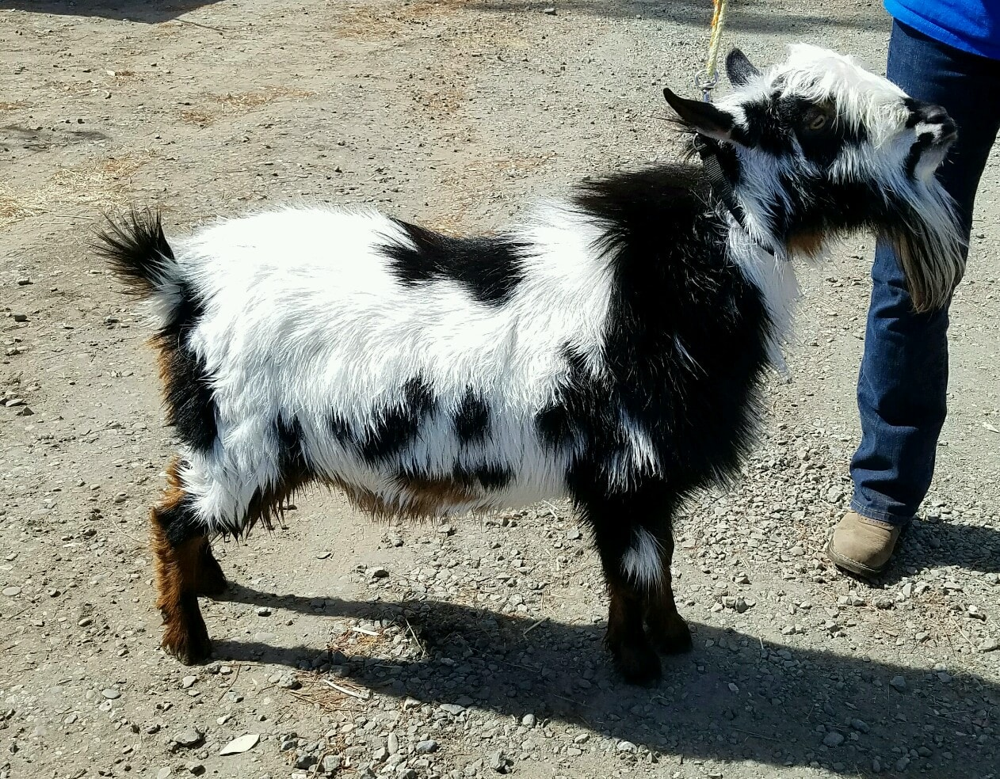

BUCKS
| Buck | Photos |
|---|---|
|
DOB 03/24/2015
Sire: Poppy Patch Honey Ima Hottie LA2014
Dam: Castle Rock Heart of Darkness LA2015 LA2014
Sire's Sire: Rosasharn GM Paradoxos *B
Sire's Dam: Algedi Farm DJ Just Like Honey
Dam's Sire: CRF Castle Rock Harvest Moon +B AR2013 ST2016
Dam's Dam: GCH AGS Algedi Farm S Honey Heart 5*M AR2011 ST2015 LA2010 LA2010 LA2008
|



|
|
DOB 02/09/2016
Sire: Farm Oldesouth Man N Command *B
Dam: Kickapoo Creek SB Oreo
Sire's Sire: Farm Oldesouth Cherokee Paint *B
Sire's Dam: SGCH Rosasharn GX Udiamond 3*M VVEE90 AR2012 ST2011 LA2014, 2012, 2011
Dam's Sire: AGS DC Miniatures SJ Smokeysbandit
Dam's Dam: Dream-Weaver DMC Melody |
|
|
DOB 03/13/2016 *B
Sire: Castle Rock Chicago Peace Dam: SGCH Castle Rock Moon Beam VEEE90
Sire's Sire: Copper Penny ROF Calico Jack
Sire's Dam: AGS CRF Castle Rock Tuscan Sun Dam's Sire: Castle Rock Cleveland Sage Dam's Dam: CRF Castle Rock Moon River +EEE88
|


|
|
DOB 07/28/2016
Sire: Urban Acres SW All Hail Vader Dam: AGS VVR AFU Calamity Jane Sire's Sire: Urban Acres Blue Skywalker AI +*B AR2015 LA2015 LA2013
Sire's Dam: Urban Acres PP Hail Stone 3*M AR2015 LA2016 LA2015 V+EV88
Dam's Sire: AGS Kari-On All Fired Up
Dam's Dam: AGS Urban Acres WC Cowgirl |


|
Does brought for breeding must have proof of a recent (within 30 days) negative CAE test. No exceptions. Please try to be on time for your appointment, or call me as soon as you know you are going to be late so I can try to rearrange my plans accordingly.
Please call ahead to check and make sure that we are going to be around when your doe is expected to come into heat so we can try to accomodate your schedule. Be prepared to be the one holding your doe while the buck is servicing her-- does who do not live near bucks may be a bit "spooked" by the buck when seeing him for the first time and want to run away. You are responsible for keeping her within range of the buck, as I will have my hands full with him (not because they are aggressive, which they aren't, but because they have a low center of gravity and are remarkably strong when they want to go somewhere).
A note about breeding your does: In order to be fertile, goats need to have a good mineral balance in their systems, with the two most important minerals for fertility being copper and selenium. At a minimum, your doe should have a free choice loose goat mineral available to consume at all times. We prefer Sweetlix Goat Minerals. A sheep and goat mineral will not do as there will be no copper in it (toxic to sheep), but goats MUST have copper. Even with a loose mineral available to our goats 24/7, we have found the need to supplement with copper bolusing and BO-SE (a selenium/vitamin E shot) at least a couple of times a year. If your doe has a rough terrier-type texture to her coat, the liklihood of her settling is much lower, as this is a sign of mineral (usually copper) deficiency. Weak heats can also be a sign of mineral deficiency, and as the mineral balance gets better, their signs of heat get much stronger. Another way to judge if your doe is mineral deficient is to look at pictures of her from when she was a kid- is she significantly lighter than as a kid? That is also a sign of deficiency. If your gold kid is white as a mature adult, or your black doe is turning brown, there is a really good chance that she needs some extra minerals before you take a drive to our farm.
CONTACT US
Barbara A Tucker
8 Gables
7280 Lauras Lane
Vacaville, CA 95688
925-250-6188
8gablesranch@gmail.com
8 Gables
7280 Lauras Lane
Vacaville, CA 95688
925-250-6188
8gablesranch@gmail.com